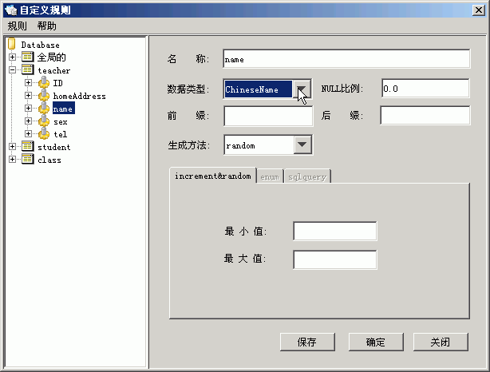

student表homeAddress列的规则，使用的是自定义类型ChinaAddress。生成中国的地址。
本教程使用TestDataBuilder自带的school工程生成测试数据。
create database school
go
use school
go
create table teacher
(
ID varchar(255) primary key,
name varchar(255) not null,
sex varchar(10) not null,
tel varchar(255),
homeAddress varchar(255),
)
create table class
(
id varchar(255) primary key,
code varchar(255) not null,
master varchar(255) foreign key(master) REFERENCES teacher(id),
classRome varchar(255) not null,
)
create table student
(
ID int IDENTITY primary key,
no varchar(255) not null,
name varchar(255) not null,
sex varchar(10) not null,
age int not null,
tel varchar(256),
birthday datetime,
classId varchar(255) foreign key(classId) REFERENCES class(id),
homeAddress varchar(255),
createTime datetime,
count int
)
go
-- ----------------------------------------------------------------------
-- MySQL Migration Toolkit
-- SQL Create Script
-- ----------------------------------------------------------------------
SET FOREIGN_KEY_CHECKS = 0;
CREATE DATABASE IF NOT EXISTS `school`
CHARACTER SET utf8 COLLATE utf8_general_ci;
USE `school`;
-- -------------------------------------
-- Tables
DROP TABLE IF EXISTS `school`.`class`;
CREATE TABLE `school`.`class` (
`id` VARCHAR(255) NOT NULL,
'code' VARCHAR(255) NOT NULL,
`master` VARCHAR(255) NULL,
`classRome` VARCHAR(255) NOT NULL,
PRIMARY KEY (`id`),
CONSTRAINT `FK__class__master__0425A276` FOREIGN KEY `FK__class__master__0425A276` (`master`)
REFERENCES `school`.`teacher` (`ID`)
ON DELETE NO ACTION
ON UPDATE NO ACTION
)
ENGINE = INNODB;
DROP TABLE IF EXISTS `school`.`student`;
CREATE TABLE `school`.`student` (
`ID` INT(10) NOT NULL AUTO_INCREMENT,
`no` VARCHAR(255) NOT NULL,
`name` VARCHAR(255) NOT NULL,
`sex` VARCHAR(10) NOT NULL,
`age` INT(10) NOT NULL,
`tel` VARCHAR(256) NULL,
`birthday` DATETIME NULL,
`classId` VARCHAR(255) NULL,
`homeAddress` VARCHAR(255) NULL,
`count` INT(10) NULL,
PRIMARY KEY (`ID`),
CONSTRAINT `FK__student__classId__07020F21` FOREIGN KEY `FK__student__classId__07020F21` (`classId`)
REFERENCES `school`.`class` (`id`)
ON DELETE NO ACTION
ON UPDATE NO ACTION
)
ENGINE = INNODB;
DROP TABLE IF EXISTS `school`.`teacher`;
CREATE TABLE `school`.`teacher` (
`ID` VARCHAR(255) NOT NULL,
`name` VARCHAR(255) NOT NULL,
`sex` VARCHAR(10) NOT NULL,
`tel` VARCHAR(255) NULL,
`homeAddress` VARCHAR(255) NULL,
PRIMARY KEY (`ID`)
)
ENGINE = INNODB;
SET FOREIGN_KEY_CHECKS = 1;
-- ----------------------------------------------------------------------
-- EOF
teacher表id列的规则，类型改为Integer,是自动增长的，从10开始往上长，加上前缀tea,生成的数据为:tea100,tea101....
teacher表homeAddress列的规则，使用自定义类型ChinaAddress,生成数据如:湖北省，武汉市。生成方法无效。

teacher表name列的规则，使用自定义类型ChineseName.生成中文姓名
teacher表sex列的规则，String类型，采用枚举值，(取值男，女,其中男女比重为2:1)
teacher表tel列的规则，类型为手机号码类型，并且在1310000000到15999999999之间。Null比例为50%.可以看看生成的数据,tel字段大约有50%为Null的。
student表age列的规则，是随机的数值，并且都在20到30之间。
student表birthday列的规则，是随机的时间值，并且都在1984-08-08 00-00-00到1987-08-08 00-00-00之间。
student表id列使用的class4student规则，使用的是sqlquery是使用语句"select id from student" 做查询的。
student表count列的规则，是随机的数值，并且都在800到900之间。
student表homeAddress列的规则，使用的是自定义类型ChinaAddress。生成中国的地址。
student表name列的规则，使用自定义类型ChineseName，生成中文名字。
student表no列的规则，是由"BD-" + student所在的班级的Code + student的姓名组成,生成的数据如下:BD-WH10087:张三,下面是Java代码:
student表sex列的规则，使用枚举值,取值男，女，比例为 1:1
student表tel列的规则，使用自定义类型手机号码，并且值在13100000000到15999999999之间。
class表classRome列的规则，使用随机生成的String,长度在20到40之间。
class表id列的规则，使用自动增长的Integer型，从1000开始，到9999999结束。
student表master列的规则teacher4class，使用sqlquery类型（因为是外键，需要从引用表中查出来)。
class表的code列的规则,使用WH前缀,加数字增长方式.